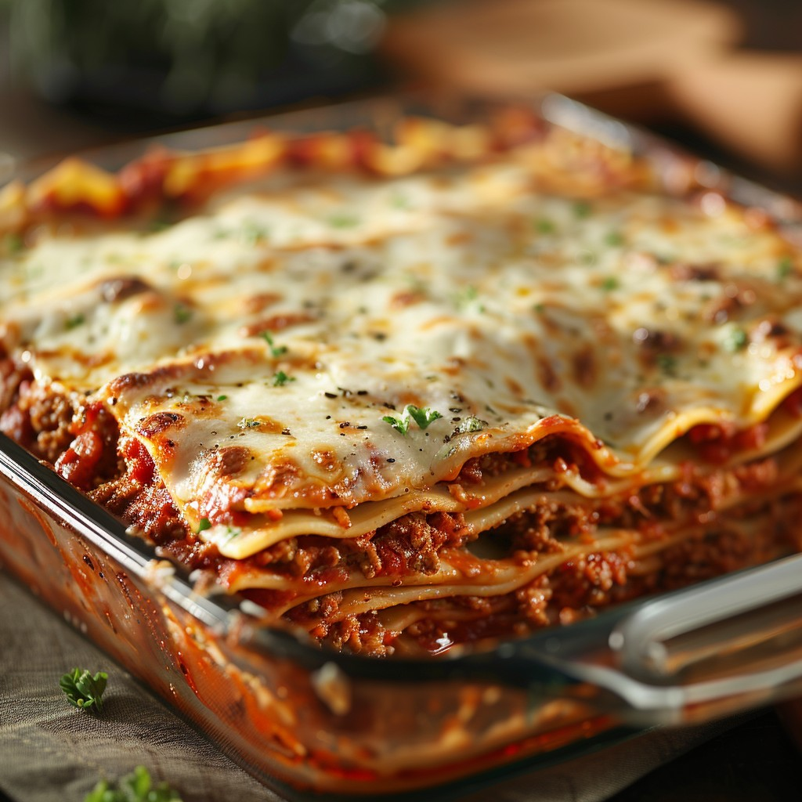

Lasagna

Lasagna is a classic comfort food, featuring layers of tender pasta, savory ground meat, a robust tomato-based sauce, and a generous topping of melted, golden-brown cheese. Baked to perfection, the edges are slightly crispy while the inside remains delectably gooey and rich. The sprinkling of fresh herbs adds a hint of freshness to this hearty dish, perfect for a family dinner or a cozy gathering with friends.
Ingredients
- Meats: Sausage and lean ground beef
- One Onion
- Two Garlic clonves
- Tomato Products:
- One can of crushed tomatoes
- Two cans of tomato sauce
- Two cans of tomato paste
- Two tablespoon of sugar
- Seasonings:
- Fresh parsley
- Dried basil Leaves
- Salt
- Italian seasoning
- Fennel seeds
- Black pepper
- Lasagna noodles
- Cheeses of your choice
Steps to follow
- Make the meat sauce
- Cook the noodles Al-Dante
- Make the cheese mixture
- Layer the lasagna
- Cover with foil and bake
- Let it rest before serving
Homepage